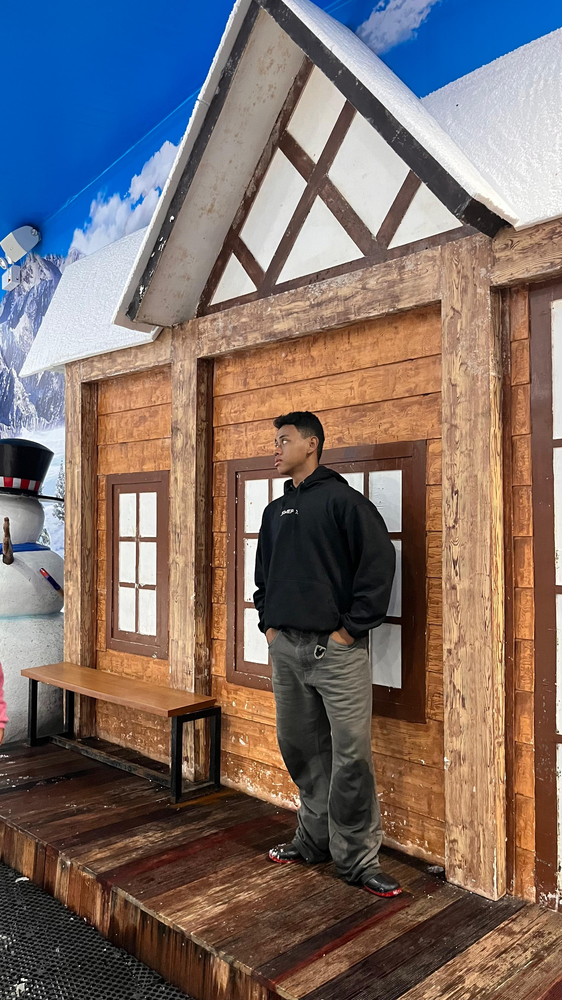

Vocational High School Student
Software Engineering (RPL)
Welcome to my personal portfolio website.
I am interested in technology, machinery,
maintenance, and website development.

My name is Fatih Favian Mahardika. I am a student of SMK Negeri 12 Jakarta, specializing in Software Engineering (RPL). I possess a strong drive to learn, and I am disciplined, detail-oriented, and responsible. I have completed an internship (PKL) in the fields of production and maintenance. I am familiar with the fundamentals of machine maintenance, production processes, and the implementation of 5S (5R) and TPM (Total Productive Maintenance) workplace methodologies. I am capable of working effectively within a team, following operational procedures, and adapting to new environments.
2015 - 2021
2021 - 2024
2024 - 2027
Software Engineering (RPL)
PT Toyota Motor Manufacturing Indonesia
Production Division - Maintenance
Learned about machine maintenance,
Press Welding, production processes,
5R workplace practices, and TPM.
Playing football and developing teamwork.
Maintaining fitness and physical activity.
Learning about machinery and technology.
Email: fatihfavianmahardika@gmail.com
Instagram: @frank_vian_tih_16